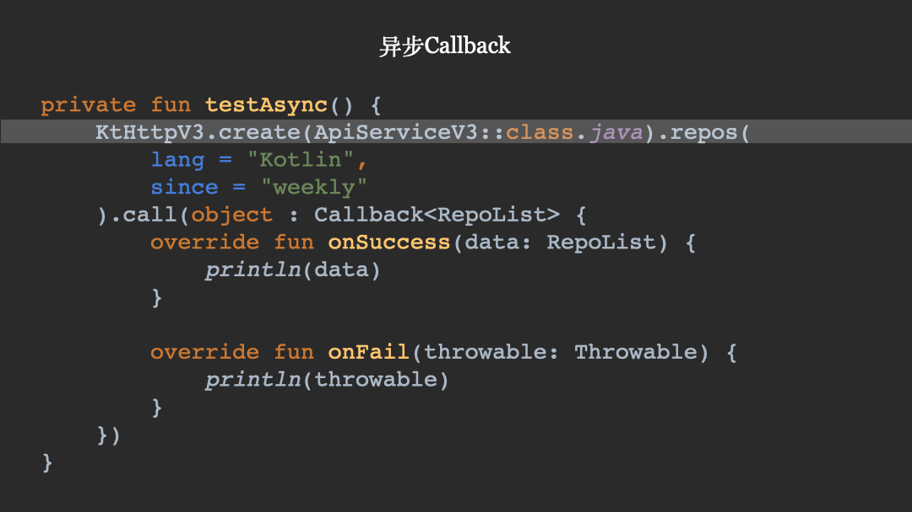

Audio实战：让KtHttp支持挂起函数
在上一次实战课当中，我们已经开发出了两个版本的 KtHttp，1.0 版本的是基于命令式风格的，2.0 版本的是基于函数式风格的。其中 2.0 版本的代码风格，跟我们平时工作写的代码风格很不一样，之前我也说了，这主要是因为业界对 Kotlin 函数式编程接纳度并不高，所以这节课的代码，我们将基于 1.0 版本的代码继续改造。这样，也能让课程的内容更接地气一些，甚至你都可以借鉴今天写代码的思路，复用到实际的 Android 或者后端开发中去。
跟往常一样，这节课的代码还是会分为两个版本：
3.0 版本，在之前 1.0 版本的基础上，扩展出异步请求的能力。
4.0 版本，进一步扩展异步请求的能力，让它支持挂起函数。
好，接下来就正式开始吧！
3.0 版本：支持异步（Call）
有了上一次实战课的基础，这节课就会轻松一些了。关于动态代理、注解、反射之类的知识不会牵涉太多，我们今天主要把精力都集中在协程上来。不过，在正式开始写协程代码之前，我们需要先让 KtHttp 支持异步请求，也就是 Callback 请求。
这是为什么呢？别忘了第 15 讲的内容：挂起函数本质就是 Callback！所以，为了让 KtHttp 支持挂起函数，我们可以采用迂回的策略，让它先支持 Callback。在之前 1.0、2.0 版本的代码中，KtHttp 是只支持同步请求的，你可能对异步同步还有些懵，我带你来看个例子吧。
首先，这个是同步代码：
fun main() {
// 同步代码
val api: ApiService = KtHttpV1.create(ApiService::class.java)
val data: RepoList = api.repos(lang = "Kotlin", since = "weekly")
println(data)
}可以看到，在 main 函数当中，我们调用了 KtHttp 1.0 的代码，其中 3 行代码的运行顺序是 1、2、3，这就是典型的同步代码。它的另一个特点就是：所有代码都会在一个线程中执行，因此这样的代码如果运行在 Android、Swing 之类的 UI 编程平台上，是会导致主线程卡死的。
那么，异步代码又是长什么样的呢？
private fun testAsync() {
// 异步代码
KtHttpV3.create(ApiServiceV3::class.java).repos(
lang = "Kotlin",
since = "weekly"
).call(object : Callback<RepoList> {
override fun onSuccess(data: RepoList) {
println(data)
}
override fun onFail(throwable: Throwable) {
println(throwable)
}
})
}上面的 testAsync() 方法当中的代码，就是典型的异步代码，它跟同步代码最大的差异就是，有了一个 Callback，而且代码不再是按照顺序执行的了。你可以参考下面这个动图：

所以，在 3.0 版本的开发中，我们就是要实现类似上面 testAsync() 的请求方式。为此，我们首先需要创建一个 Callback 接口，在这个 Callback 当中，我们可以拿到 API 请求的结果。
interface Callback<T: Any> {
fun onSuccess(data: T)
fun onFail(throwable: Throwable)
}在 Callback 这个接口里，有一个泛型参数 T，还有两个回调，分别是 onSuccess 代表接口请求成功、onFail 代表接口请求失败。需要特别注意的是，这里我们运用了空安全思维当中的泛型边界“T: Any”，这样一来，我们就可以保证 T 类型一定是非空的。
除此之外，我们还需要一个 KtCall 类，它的作用是承载 Callback，或者说，它是用来调用 Callback 的。
class KtCall<T: Any>(
private val call: Call,
private val gson: Gson,
private val type: Type
) {
fun call(callback: Callback<T>): Call {
// TODO
}
}KtCall 这个类仍然使用了泛型边界“T: Any”，另外，它还有几个关键的成员分别是：OkHttp 的 Call 对象、JSON 解析的 Gson 对象，以及反射类型 Type。然后还有一个 call() 方法，它接收的是前面我们定义的 Callback 对象，返回的是 OkHttp 的 Call 对象。所以总的来说，call() 方法当中的逻辑会分为三个步骤。
class KtCall<T: Any>(
private val call: Call,
private val gson: Gson,
private val type: Type
) {
fun call(callback: Callback<T>): Call {
// 步骤1， 使用call请求API
// 步骤2， 根据请求结果，调用callback.onSuccess()或者是callback.onFail()
// 步骤3， 返回OkHttp的Call对象
}
}我们一步步来分析这三个步骤：
步骤 1，使用 OkHttp 的 call 对象请求 API，这里需要注意的是，为了将请求任务派发到异步线程，我们需要使用 OkHttp 的异步请求方法 enqueue()。
步骤 2，根据请求结果，调用 callback.onSuccess() 或者是 callback.onFail()。如果请求成功了，我们在调用 onSuccess() 之前，还需要用 Gson 将请求结果进行解析，然后才返回。
步骤 3，返回 OkHttp 的 Call 对象。
接下来，我们看看具体代码是怎么样的：
class KtCall<T: Any>(
private val call: Call,
private val gson: Gson,
private val type: Type
) {
fun call(callback: Callback<T>): Call {
call.enqueue(object : okhttp3.Callback {
override fun onFailure(call: Call, e: IOException) {
callback.onFail(e)
}
override fun onResponse(call: Call, response: Response) {
try { // ①
val t = gson.fromJson<T>(response.body?.string(), type)
callback.onSuccess(t)
} catch (e: Exception) {
callback.onFail(e)
}
}
})
return call
}
}经过前面的解释，这段代码就很好理解了，唯一需要注意的是注释①处，由于 API 返回的结果并不可靠，即使请求成功了，其中的 JSON 数据也不一定合法，所以这里我们一般还需要进行额外的判断。在实际的商业项目当中，我们可能还需要根据当中的状态码，进行进一步区分和封装，这里为了便于理解，我就简单处理了。
那么在实现了 KtCall 以后，我们就只差 ApiService 这个接口了，这里我们定义 ApiServiceV3，以作区分。
interface ApiServiceV3 {
@GET("/repo")
fun repos(
@Field("lang") lang: String,
@Field("since") since: String
): KtCall<RepoList> // ①
}我们需要格外留意以上代码中的注释①，这其实就是 3.0 和 1.0 之间的最大区别。由于 repo() 方法的返回值类型是 KtCall，为了支持这种写法，我们的 invoke 方法就需要跟着做一些小的改动：
// 这里也同样使用了泛型边界
private fun <T: Any> invoke(path: String, method: Method, args: Array<Any>): Any? {
if (method.parameterAnnotations.size != args.size) return null
var url = path
val parameterAnnotations = method.parameterAnnotations
for (i in parameterAnnotations.indices) {
for (parameterAnnotation in parameterAnnotations[i]) {
if (parameterAnnotation is Field) {
val key = parameterAnnotation.value
val value = args[i].toString()
if (!url.contains("?")) {
url += "?$key=$value"
} else {
url += "&$key=$value"
}
}
}
}
val request = Request.Builder()
.url(url)
.build()
val call = okHttpClient.newCall(request)
val genericReturnType = getTypeArgument(method)
// 变化在这里
return KtCall<T>(call, gson, genericReturnType)
}
// 拿到 KtCall<RepoList> 当中的 RepoList类型
private fun getTypeArgument(method: Method) =
(method.genericReturnType as ParameterizedType).actualTypeArguments[0]在上面的代码中，大部分代码和 1.0 版本的一样的，只是在最后封装了一个 KtCall 对象，直接返回。所以在后续调用它的时候，我们就可以这么写了：ktCall.call()。
private fun testAsync() {
// 创建api对象
val api: ApiServiceV3 = KtHttpV3.create(ApiServiceV3::class.java)
// 获取ktCall
val ktCall: KtCall<RepoList> = api.repos(
lang = "Kotlin",
since = "weekly"
)
// 发起call异步请求
ktCall.call(object : Callback<RepoList> {
override fun onSuccess(data: RepoList) {
println(data)
}
override fun onFail(throwable: Throwable) {
println(throwable)
}
})
}以上代码很好理解，我们一步步创建 API 对象、ktCall 对象，最后发起请求。不过，在工作中一般是不会这么写代码的，因为创建太多一次性临时对象了。我们完全可以用链式调用的方式来做：
private fun testAsync() {
KtHttpV3.create(ApiServiceV3::class.java)
.repos(
lang = "Kotlin",
since = "weekly"
).call(object : Callback<RepoList> {
override fun onSuccess(data: RepoList) {
println(data)
}
override fun onFail(throwable: Throwable) {
println(throwable)
}
})
}如果你没有很多编程经验，那你可能会对这种方式不太适应，但在实际写代码的过程中，你会发现这种模式写起来会比上一种舒服很多，因为你再也不用为临时变量取名字伤脑筋了。
总的来说，到这里的话，我们的异步请求接口就已经完成了。而且，由于我们的实际请求已经通过 OkHttp 派发（enqueue）到统一的线程池当中去了，并不会阻塞主线程，所以这样的代码模式执行在 Android、Swing 之类的 UI 编程平台，也不会引起 UI 界面卡死的问题。
那么，3.0 版本是不是到这里就结束了呢？其实并没有，因为我们还有一种情况没有考虑。我们来看看下面这段代码示例：
interface ApiServiceV3 {
@GET("/repo")
fun repos(
@Field("lang") lang: String,
@Field("since") since: String
): KtCall<RepoList>
@GET("/repo")
fun reposSync(
@Field("lang") lang: String,
@Field("since") since: String
): RepoList // 注意这里
}
private fun testSync() {
val api: ApiServiceV3 = KtHttpV3.create(ApiServiceV3::class.java)
val data: RepoList = api.reposSync(lang = "Kotlin", since = "weekly")
println(data)
}请留意注释的地方，repoSync() 的返回值类型是 RepoList，而不是 KtCall 类型，这其实是我们 1.0 版本的写法。看到这，你是不是发现问题了？虽然 KtHttp 支持了异步请求，但原本的同步请求反而不支持了。
所以，为了让 KtHttp 同时支持两种请求方式，我们只需要增加一个 if 判断即可：
private fun <T: Any> invoke(path: String, method: Method, args: Array<Any>): Any? {
// 省略其他代码
return if (isKtCallReturn(method)) {
val genericReturnType = getTypeArgument(method)
KtCall<T>(call, gson, genericReturnType)
} else {
// 注意这里
val response = okHttpClient.newCall(request).execute()
val genericReturnType = method.genericReturnType
val json = response.body?.string()
gson.fromJson<Any?>(json, genericReturnType)
}
}
// 判断当前接口的返回值类型是不是KtCall
private fun isKtCallReturn(method: Method) =
getRawType(method.genericReturnType) == KtCall::class.java在上面的代码中，我们定义了一个方法 isKtCallReturn()，它的作用是判断当前接口方法的返回值类型是不是 KtCall，如果是的话，我们就认为它是一个异步接口，这时候返回 KtCall 对象；如果不是，我们就认为它是同步接口。这样我们只需要将 1.0 的逻辑挪到 else 分支，就可以实现兼容了。
那么到这里，我们 3.0 版本的开发就算是完成了。接下来，我们进入 4.0 版本的开发。
4.0 版本：支持挂起函数
终于来到协程实战的部分了。在日常的开发工作当中，你也许经常会面临这样的一个问题：虽然很想用 Kotlin 的协程来简化异步开发，但公司的底层框架全部都是 Callback 写的，根本不支持挂起函数，我一个上层的业务开发工程师，能有什么办法呢？
其实，我们当前的 KtHttp 就面临着类似的问题：3.0 版本只支持 Callback 异步调用，现在我们想要扩展出挂起函数的功能。这其实就是大部分 Kotlin 开发者会遇到的场景。
就我这几年架构迁移的实践经验来看，针对这个问题，我们主要有两种解法：
第一种解法，不改动 SDK 内部的实现，直接在 SDK 的基础上扩展出协程的能力。
第二种解法，改动 SDK 内部，让 SDK 直接支持挂起函数。
下面我们先来看看第一种解法。至于第二种解法，其实还可以细分出好几种思路，由于它涉及到挂起函数更底层的一些知识，具体方案我会在源码篇的第 27 讲介绍。
解法一：扩展 KtCall
这种方式有一个优势，那就是我们不需要改动 3.0 版本的任何代码。这种场景在工作中也是十分常见的，比如说，项目中用到的 SDK 是开源的，或者 SDK 是公司其他部门开发的，我们无法改动 SDK。
具体的做法，就是为 KtCall 这个类扩展出一个挂起函数。
/*
注意这里 函数名称
↓ ↓ */
suspend fun <T: Any> KtCall<T>.await(): T = TODO()在上面的代码中，我们定义了一个扩展函数 await()。首先，它是一个挂起函数，其次，它的扩展接收者类型是 KtCall，其中带着一个泛型 T，挂起函数的返回值也是泛型 T。
而由于它是一个挂起函数，所以，我们的代码就可以换成这样的方式来写了。
fun main() = runBlocking {
val ktCall = KtHttpV3.create(ApiServiceV3::class.java)
.repos(lang = "Kotlin", since = "weekly")
val result = ktCall.await() // 调用挂起函数
println(result)
}那么，现在我们就只剩下一个问题了：await() 具体该如何实现？
在这里，我们需要用到 Kotlin 官方提供的一个顶层函数：suspendCoroutine{}，它的函数签名是这样的：
public suspend inline fun <T> suspendCoroutine(crossinline block: (Continuation<T>) -> Unit): T {
// 省略细节
}从它的函数签名，我们可以发现，它是一个挂起函数，也是一个高阶函数，参数类型是“(Continuation) -> Unit”，如果你还记得第 15 讲当中的内容，你应该就已经发现了，它其实就等价于挂起函数类型！
所以，我们可以使用 suspendCoroutine{} 来实现 await() 方法：
/*
注意这里
↓ */
suspend fun <T: Any> KtCall<T>.await(): T = suspendCoroutine{
continuation ->
// ↑
// 注意这里
}如果你仔细分析这段代码的话，会发现 suspendCoroutine{} 的作用，其实就是将挂起函数当中的 continuation 暴露出来。
那么，suspendCoroutine{} 当中的代码具体该怎么写呢？答案应该也很明显了，当然是要用这个被暴露出来的 continuation 来做文章啦！
这里我们再来回顾一下 Continuation 这个接口：
public interface Continuation<in T> {
public val context: CoroutineContext
// 关键在于这个方法
public fun resumeWith(result: Result<T>)
}通过定义可以看到，整个 Continuation 只有一个方法，那就是 resumeWith()，根据它的名字我们就可以推测出，它是用于“恢复”的，参数类型是 Result。所以很明显，这就是一个带有泛型的“结果”，它的作用就是承载协程执行的结果。
所以，综合来看，我们就可以进一步写出这样的代码了：
suspend fun <T: Any> KtCall<T>.await(): T =
suspendCoroutine { continuation ->
call(object : Callback<T> {
override fun onSuccess(data: T) {
continuation.resumeWith(Result.success(data))
}
override fun onFail(throwable: Throwable) {
continuation.resumeWith(Result.failure(throwable))
}
})
}以上代码也很容易理解，当网络请求执行成功以后，我们就调用 resumeWith()，同时传入 Result.success(data)；如果请求失败，我们就传入 Result.failure(throwable)，将对应的异常信息传进去。
不过，也许你会觉得创建 Result 的写法太繁琐了，没关系，你可以借助 Kotlin 官方提供的扩展函数提升代码可读性。
suspend fun <T : Any> KtCall<T>.await(): T =
suspendCoroutine { continuation ->
call(object : Callback<T> {
override fun onSuccess(data: T) {
continuation.resume(data)
}
override fun onFail(throwable: Throwable) {
continuation.resumeWithException(throwable)
}
})
}到目前为止，await() 这个扩展函数其实就已经实现了。这时候，如果我们在协程当中调用 await() 方法的话，代码是可以正常执行的。不过，这种做法其实还有一点瑕疵，那就是不支持取消。
让我们来写一个简单的例子：
fun main() = runBlocking {
val start = System.currentTimeMillis()
val deferred = async {
KtHttpV3.create(ApiServiceV3::class.java)
.repos(lang = "Kotlin", since = "weekly")
.await()
}
deferred.invokeOnCompletion {
println("invokeOnCompletion!")
}
delay(50L)
deferred.cancel()
println("Time cancel: ${System.currentTimeMillis() - start}")
try {
println(deferred.await())
} catch (e: Exception) {
println("Time exception: ${System.currentTimeMillis() - start}")
println("Catch exception:$e")
} finally {
println("Time total: ${System.currentTimeMillis() - start}")
}
}
suspend fun <T : Any> KtCall<T>.await(): T =
suspendCoroutine { continuation ->
call(object : Callback<T> {
override fun onSuccess(data: T) {
println("Request success!") // ①
continuation.resume(data)
}
override fun onFail(throwable: Throwable) {
println("Request fail!：$throwable")
continuation.resumeWithException(throwable)
}
})
}
/*
输出结果：
Time cancel: 536 // ②
Request success! // ③
invokeOnCompletion!
Time exception: 3612 // ④
Catch exception:kotlinx.coroutines.JobCancellationException: DeferredCoroutine was cancelled; job=DeferredCoroutine{Cancelled}@6043cd28
Time total: 3612
*/在 main 函数当中，我们在 async 里调用了挂起函数，接着 50ms 过去后，我们就去尝试取消协程。这段代码中一共有三处地方需要注意，我们来分析一下：
结合注释①、③一起分析，我们发现，即使调用了 deferred.cancel()，网络请求仍然会继续执行。根据“Catch exception:”输出的异常信息，我们也发现，当 deferred 被取消以后我们还去调用 await() 的时候，会抛出异常。
对比注释②、④，我们还能发现，deferred.await() 虽然会抛出异常，但是它却耗时 3000ms。虽然 deferred 被取消了，但是当我们调用 await() 的时候，它并不会马上就抛出异常，而是会等到内部的网络请求执行结束以后，才抛出异常，在此之前都会被挂起。
综上所述，当我们使用 suspendCoroutine{} 来实现挂起函数的时候，默认情况下是不支持取消的。那么，具体该怎么做呢？其实也很简单，就是使用 Kotlin 官方提供的另一个 API：suspendCancellableCoroutine{}。
suspend fun <T : Any> KtCall<T>.await(): T =
// 变化1
// ↓
suspendCancellableCoroutine { continuation ->
val call = call(object : Callback<T> {
override fun onSuccess(data: T) {
println("Request success!")
continuation.resume(data)
}
override fun onFail(throwable: Throwable) {
println("Request fail!：$throwable")
continuation.resumeWithException(throwable)
}
})
// 变化2
// ↓
continuation.invokeOnCancellation {
println("Call cancelled!")
call.cancel()
}
}当我们使用 suspendCancellableCoroutine{} 的时候，可以往 continuation 对象上面设置一个监听：invokeOnCancellation{}，它代表当前的协程被取消了，这时候，我们只需要将 OkHttp 的 call 取消即可。
这样一来，main() 函数就能保持不变，得到的输出结果却大不相同。
/*
suspendCoroutine结果：
Time cancel: 536
Request success!
invokeOnCompletion!
Time exception: 3612 // ①
Catch exception:kotlinx.coroutines.JobCancellationException: DeferredCoroutine was cancelled; job=DeferredCoroutine{Cancelled}@6043cd28
Time total: 3612
*/
/*
suspendCancellableCoroutine结果：
Call cancelled!
Time cancel: 464
invokeOnCompletion!
Time exception: 466 // ②
Catch exception:kotlinx.coroutines.JobCancellationException: DeferredCoroutine was cancelled; job=DeferredCoroutine{Cancelled}@6043cd28
Time total: 466
Request fail!：java.io.IOException: Canceled // ③
*/对比注释①、②，可以发现，后者是会立即响应协程取消事件的，所以当代码执行到 deferred.await() 的时候，会立即抛出异常，而不会挂起很长时间。另外，通过注释③这里的结果，我们也可以发现，OkHttp 的网络请求确实被取消了。
所以，我们可以得出一个结论，使用 suspendCancellableCoroutine{}，我们可以避免不必要的挂起，比如例子中的 deferred.await()；另外也可以节省计算机资源，因为这样可以避免不必要的协程任务，比如这里被成功取消的网络请求。
到这里，我们的解法一就已经完成了。这种方式并没有改动 KtHttp 的源代码，而是以扩展函数来实现的。所以，从严格意义上来讲，KtHttp 4.0 版本并没有开发完毕，等到第 27 讲我们深入理解了挂起函数的底层原理后，我们再来完成解法二的代码。
小结
这节课，我们在 KtHttp 1.0 版本的基础上，扩展出了异步请求的功能，完成了 3.0 版本的开发；接着，我们又在 3.0 版本的基础上，让 KtHttp 支持了挂起函数，这里我们是用的外部扩展的思路，并没有碰 KtHttp 内部的代码。
这里主要涉及以下几个知识点：
在 3.0 版本开发中，我们运用了泛型边界“T: Any”，落实对泛型的非空限制，同时通过封装 KtCall，为下一个版本打下了基础。
接着，在 4.0 版本中，我们借助扩展函数的特性，为 KtCall 扩展了 await() 方法。
在实现 await() 的过程中，我们使用了两个协程 API，分别是 suspendCoroutine{}、suspendCancellableCoroutine{}，在 Kotlin 协程当中，我们永远都要优先使用后者。
suspendCancellableCoroutine{} 主要有两大优势：第一，它可以避免不必要的挂起，提升运行效率；第二，它可以避免不必要的资源浪费，改善软件的综合指标。
思考题
你能分析出下面的代码执行结果吗？为什么会是这样的结果？它能给你带来什么启发？欢迎给我留言，也欢迎你把今天的内容分享给更多的朋友。
fun main() = runBlocking {
val start = System.currentTimeMillis()
val deferred = async {
KtHttpV3.create(ApiServiceV3::class.java)
.repos(lang = "Kotlin", since = "weekly")
.await()
}
deferred.invokeOnCompletion {
println("invokeOnCompletion!")
}
delay(50L)
deferred.cancel()
println("Time cancel: ${System.currentTimeMillis() - start}")
try {
println(deferred.await())
} catch (e: Exception) {
println("Time exception: ${System.currentTimeMillis() - start}")
println("Catch exception:$e")
} finally {
println("Time total: ${System.currentTimeMillis() - start}")
}
}
suspend fun <T : Any> KtCall<T>.await(): T =
suspendCancellableCoroutine { continuation ->
val call = call(object : Callback<T> {
override fun onSuccess(data: T) {
println("Request success!")
continuation.resume(data)
}
override fun onFail(throwable: Throwable) {
println("Request fail!：$throwable")
continuation.resumeWithException(throwable)
}
})
// 注意这里
// continuation.invokeOnCancellation {
// println("Call cancelled!")
// call.cancel()
// }
}
COMMUNITY NOTES
读者评论
这篇文章暂时没有读者留言。